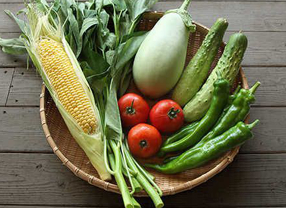
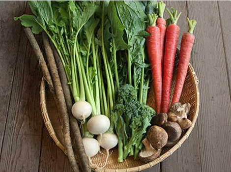
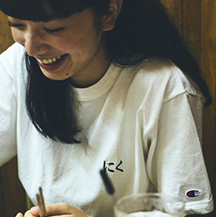

初回限定！少量お試しセット
スグ食べが選ばれる
３つの理由
-
1
本当の意味での産地直送
「なるべく収穫したばかりの状態で、野菜を味わって欲しい。」スグ食べでは、既存の産地直送サービスのように箱詰め用の倉庫を介すことはありません。農家が収穫したその日に、お客様の元へ直送で野菜をお送りします。
-
2
安心安全な無農薬野菜
出品している生産者は、有機栽培もしくは自然栽培の農家のみ。全ての商品が無農薬・無化学肥料など、安全にこだわって生産された「オーガニック農作物」です。そのため、どの商品も安心してお買い求めいただけます。
-
3
たくさんの旬な野菜との出会い
年間数十種の野菜を作る生産者から、今が旬の多様な野菜が届きます。食べチョク では生産者ごとに商品が異なります。中には年間100種類もの多品種生産をしている生産者も。旬な野菜はもちろん、珍しい野菜とも出会えます。
初回限定！少量お試しセット
-
【べジックス】
旬＊お試し野菜セット(6品目)

￥1,280（税込 / 送料別）
生産者：千葉県松戸市 ベジックス -
【くちぶえ農園】
旬＊お試し野菜セット(6品目)

￥1,280（税込 / 送料別）
生産者：長野県 飯田市 くちぶえ農園
スグ食べが “全額” 返金対応します
スグ食べでは、収穫から梱包・出荷にいたるまで
しっかりと品質管理されています。
とはいえ、実物を見ずに野菜や果物を
購入するのはちょっと不安…
安心してご購入いただけるよう、
スグ食べでは品質保証をお約束しています。
こんな農家さんが登録しています
私たちの野菜、
こんなに美味しいんです
食べてわかった、この違い
-
香りまでおいしい、新鮮さ
神奈川県A様箱を開けた途端に広がった野菜の香り。スーパーで買った野菜とはどうしてこんなに違いがあるのかとびっくりするほど豊かな大地の香りです。葉っぱまでシャキシャキのにんじんは特に子供がお気に入り。ゆでただけでも、野菜の甘みが優しく広がり、本来の味がたのしめます。
-
安心できる品質に大満足
千葉県O様無農薬・無化学肥料にこだわった生産者から送られてくるため、とても安心して毎日食卓に出せるのがうれしいです。小さな子供や働き盛りの夫など、健康に気を遣って食から体づくりをしたい我が家には、もう手放せない野菜となっています。
-

旬の野菜が食べられる豊かさ
東京都M様鮮度にこだわる「スグ食べ」だからこそ、旬になった野菜を「今だ！」と送ってきてくれるので、食卓に並ぶ野菜は常に旬の食材です。一カ所の農家さんからではなく複数の農家から選べるので、地域によっての旬の違いも楽しめます。たまに、スーパーに並ばないような珍しい野菜がまざるのも、わくわくしますね。
よくあるご質問
-
Q
産地直送のサービスってよく見るけど何が違うの？
-
A
鮮度が抜群に違います。
通常の産直サービスは、一度倉庫などに野菜を集め、そこで箱詰め作業をして配送しています。この仕組みでは、お客様が商品を受け取る時には収穫してから3,4日が経過しています。スグ食べでは、箱詰め作業を農家さんにお願いすることにより、最短で収穫当日に商品を受け取ることができます。
-
Q
どんな農家さんが登録してるの？
-
A
無農薬にこだわる、オーガニック農家さんのみが登録しています。
有機栽培や自然栽培などの環境に配慮した農法で生産するには、通常以上に費用も手間もかかります。そんな中でも、「安心な野菜を食べて欲しい」という強い思いを持って、こだわって野菜を作っている農家さんがいます。 そういった、厳選されたオーガニック農家さんのみが登録しているため、安心してお買い物を楽しんでいただけます。
初回限定！少量お試しセット
-
【べジックス】
旬＊お試し野菜セット(6品目)
￥1,280（税込 / 送料別）
生産者：千葉県松戸市 ベジックス -
【くちぶえ農園】
旬＊お試し野菜セット(6品目)
￥1,280（税込 / 送料別）
生産者：長野県 飯田市 くちぶえ農園
スグ食べが “全額” 返金対応します
スグ食べでは、収穫から梱包・出荷にいたるまで
しっかりと品質管理されています。
とはいえ、実物を見ずに野菜や果物を
購入するのはちょっと不安…
安心してご購入いただけるよう、
スグ食べでは品質保証をお約束しています。